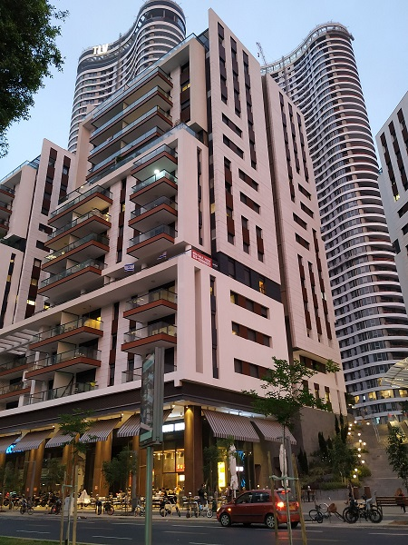
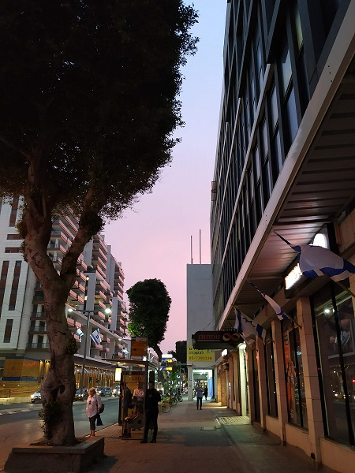
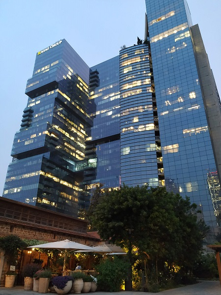
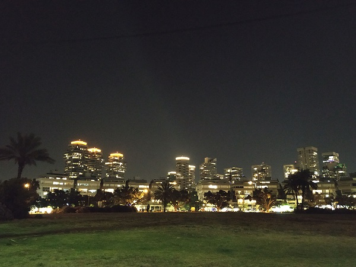
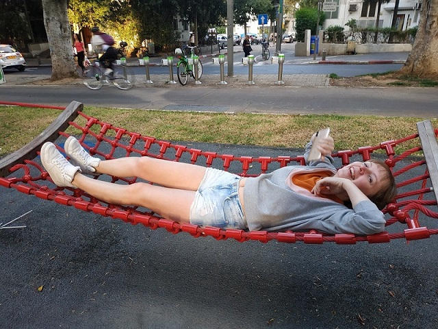
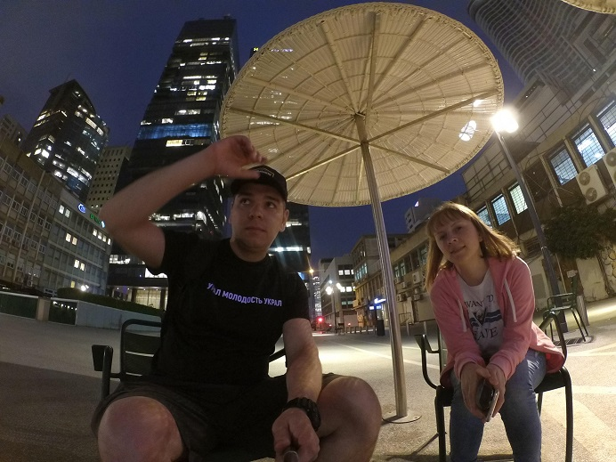
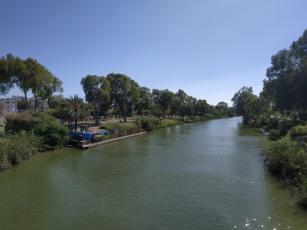
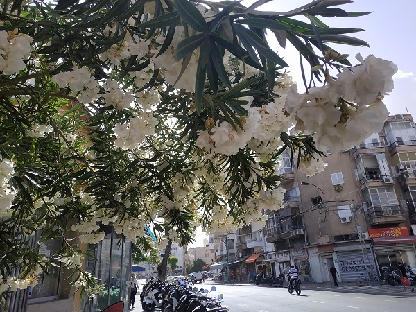
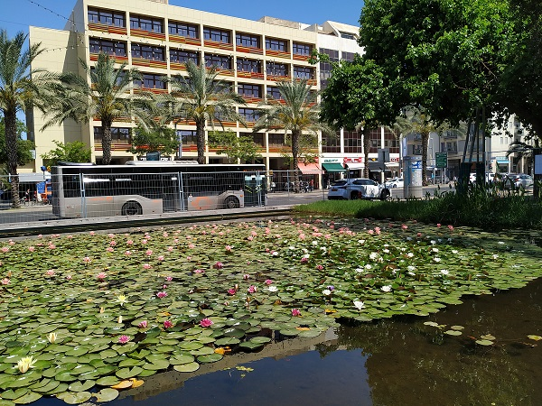

Some times we walked towards Yarkon park, it's about 6 km in one direction. There is no special in park, our aim was looking districts. Starting point was our apartment, it's a cross Elifelet and Eilat streets. Of course we didn't use the shortest road, and often our route might looked like zigzag. There is only a few scyscrapers in Ekaterinburg, so we vere amazed by all high and modern buildings. At night or late evening, when light was on they looked especially effective. Combination of old architecture and modernity it's special charm. Style of buildengs in tel Aviv is different from all I saw in other countries.



At our way back two times we had a rest at Ha-Medina Square. It's a round lawn circled by blockы of flats and I guess there are quite expensive flats. During this walks we got to know a chain of cafes Cofix, it's helped us to got some power to be able to get back to the apartment. Moreover we didn't mind to have a rest in all possible places, even in daytime. Lately it was opend in Russia so each time I buy a cap of coffee there, I recall our trip.



Tel Aviv it's not only buildings, actually there were a lot of green trees. I didn't expect to see it in a districts that is thought to be a desert. One day we found out a smoll pond with water-lilies and fish, I have a passion for them. Also there were a park with a beautiful river. People decorate their balconies with flowers and garlands.
Actually I thought it would be the longest page, because I have so many memories and stories to tell after our long evening walks. Also I believed I could have much more photos, but there are only a few of them, obviously we didn't make photos when it was dark. Now I am willing to bet that a page about food is going to be the biggest.



Summaries:
1 – Write some stories straight after walks, while all memories and emotions are vivid
2 – Make more photos at night, they have not bad quality